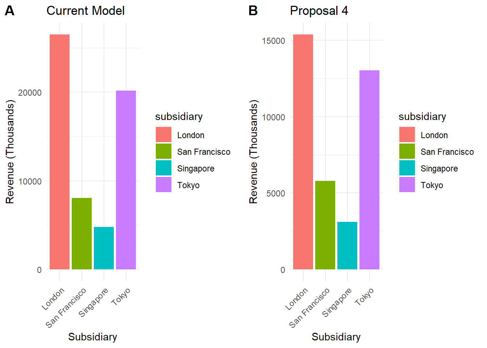
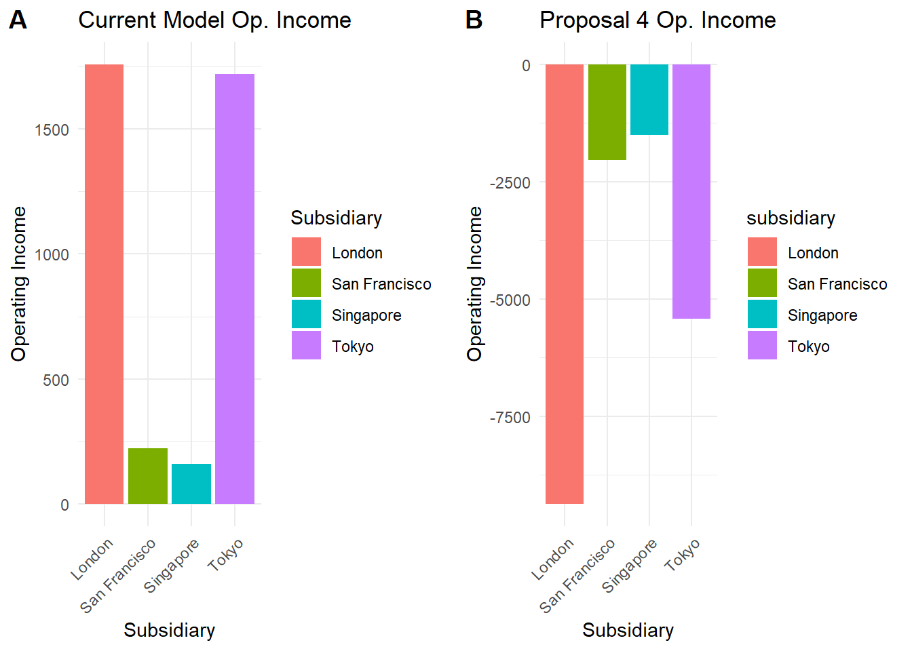

| Investment Overview by Subsidiary | |||
| Subsidiary | Equity | FixedIncome | Commodities |
|---|---|---|---|
| New York | 70.2 | 36.3 | 5.9 |
| London | 14.5 | 14.5 | 3.0 |
| Tokyo | 6.2 | 4.0 | 2.2 |
| Singapore | 2.1 | 0.3 | 0.0 |
| San Francisco | 0.0 | 0.2 | 0.6 |
GII Transfer Pricing Analysis
Purpose
In order to accurately assess the differentiating factors in the proposed transfer pricing models, this document serves as additional analysis in conjunction with our primary drafted proposal. The following visuals and scenario analysis will aid in the understanding of why the models differ and the reasoning behind our selection for which model to use. This acts as a visual analysis we would bring to the meeting to present to the committee.
Background
To provide confidence in our understanding of the business, the following visuals have been created to break down how Global Investors Inc. current assets under management differ by subsidiary:
Traditional Model
Global Investors Inc. currently uses a cost-plus revenue allocation method. This method results in a small profit for all subsidiaries. The method allocates revenue as equal to the total costs of the subsidiaries plus 10%.
Expenses
Expenses are allocated on the following basis:
- Any directly traceable expenses are recorded in the Direct Controllable Cost category.
- When they could not be directly traced, the following allocation bases are used:
- Sales Commissions: 50% of clients first year fees.
- Occupancy: Pro rata based on sq. ft.
- Travel Expenses: Bases on reason for trip.
- Advertising: Actual or pro rata based on revenue.
- Bank Charges: Charge to financial area.
- Stationary, Meetings, Gifts, Postage, Misc. : All pro rata based on sq. ft.
- All other main cost centers: Actual.
- Other Allocated Costs: Reciprocal method.
The plot below shows a breakdown of 2006 operating income for the parent and each subsidiary, under the current method (hover your mouse over each section to the see subsidiary name and operating income):
Assets Under Management Allocation (Proposal 1)
This alternative model has a few key changes (proposed by Hoskins):
- The allocation base would be assets under management.
- Subsidiaries pay a royalty of around 50% to New York for R&D and trading strategies developed by them.
- London would receive 20% of total revenues.
- Argument is most of the assets managed by the subsidiaries belonged to New York clients.
Here is two plots that show the Subsidiary Allocated Revenue from both the current model and proposal 1 (net of the royalty fee), for comparison:
Note now London is receiving the bulk of the revenue, whilst the other subsidiaries share has dropped significantly. San francisco and Singapore flip in rank.
Asset Distribution Based On Origin of Clients (Proposal 2)
This method (proposed by Davis), would see revenue allocated on asset distribution based on origin of the client.
Here is proposal 2 allocated revenues charted alongside the current model:
Allocation Split Between Client Revenues & Investment Management Revenues(Proposal 3)
This allocation method (proposed by Hoskins) would see fee revenues split between Client Services and Investment Management, meaning GI’s business units should be split accordingly. The following process would be followed:
- 50% assigned to Client Services and allocated based on subsidiary revenue(equivalent to origin of clients).
- 50% assigned to Investment Management and allocated based on assets under management.
- Widely used in the industry.
The following shows this method charted against the current model:
Note here again London is taking a large portion of the allocated revenues.
Investment Management Fully Recognized In New York (Proposal 4)
The last proposal (proposed by Davis and Freeman and working as an extension of proposal 3), would see subsidiaries recording revenues for client services, but Investment Management would be considered a New York Business unit only.
- Fee revenues corresponding to Investment Management (50%) recognized at headquarters.
- Subsidiaries reimbursed for any expenses related to investment management activities in their units plus 10% markup if these expenses qualify as direct controllable costs.
- This method takes proposal 3 and customizes it to better fit GII as a whole.
Below you will see 4 charts. The first 2 compare the revenue allocation from the current model and proposal 4, and the following 2 compare operating income of just the subsidiaires:


The proposal by Davis and Freeman puts all of the subsidiaries at an operating loss. Lets look at what happens to New Yorks Income:
Between the two methods, there is an immaterial difference between operating income for the New York office.